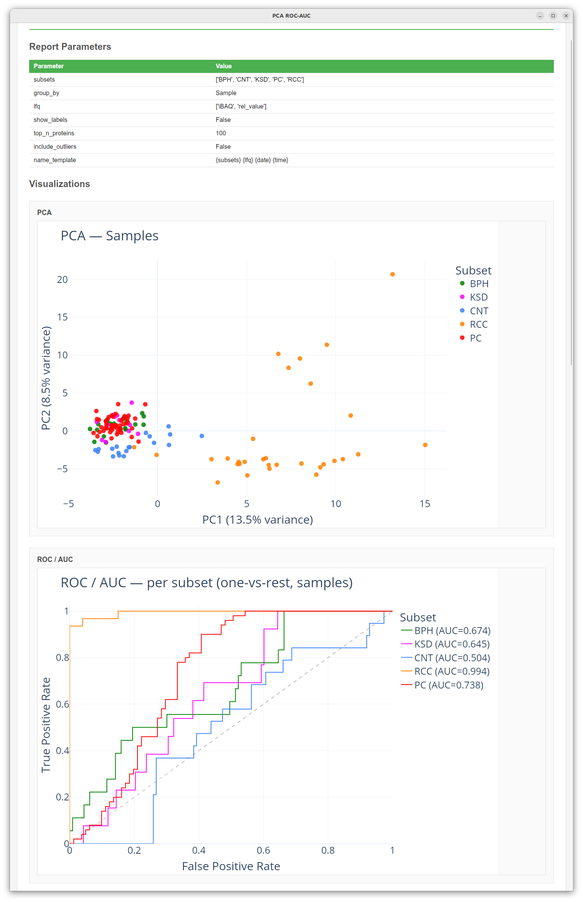

Reports
The Reports tab generates project-wide statistical analyses, cross-tool comparisons, and differential expression visualizations. Each report produces a combination of interactive Plotly figures and structured summary/detail tables that are saved directly inside your .dasmix project file.
Reporting in DASMixer is modular and extensible — in addition to the built-in reports described below, you can install or write custom report plugins (see Creating Custom Reports).

Global Report Settings and Batch Actions
At the top of the Reports tab, the Report Settings panel controls default figure dimensions and font styling applied when generating any report:
- Plot Font Size (default:
12) — base font size for axis labels, legends, and annotations - Plot Width (default:
1100px) — width of generated figures - Plot Height (default:
600px) — height of generated figures - Save — saves these styling parameters to the project
- Generate Selected — runs all reports that have their Generate with all checkbox enabled
- Export All — exports the most recently generated run of every checked report to a chosen folder
Note: Global plot settings are baked into figures at the moment of generation. Changing font size or dimensions will take effect the next time you click Generate.
Common Controls on Each Report Card
Every report in the list is presented on its own card with a unified set of controls:
- Generate with all (checkbox) — includes this report in batch generation/export actions.
- Parameters — opens a dialog with report-specific settings (subsets to include, LFQ method, statistical tests, thresholds, etc.).
- Name format — a customizable template used to name the generated report run. You can use
{date}(formatted asYYMMDD),{time}(HH:MM), and any parameter field name from the report (for example,{subsets} {lfq} {date} {time}). - Generate — runs the report calculation and saves the resulting plots, tables, and a snapshot of current project/tool settings into the database.
- Saved Reports (dropdown) — lists all previously generated runs of this report stored in the project.
- View — opens the selected report run in the interactive Report Viewer window (or your default web browser, depending on your Settings).
- Export — exports the selected report run to disk.
Built-in Reports
Out of the box, DASMixer includes five analytical reports:
1. Basic Statistics (MedianReport)
Computes comprehensive descriptive statistics of protein abundances across samples and comparison groups.
Parameters:
- Subsets: Which comparison groups to include (leave all unchecked or select all to include every group).
- LFQ: Quantification method (
emPAI,iBAQ,NSAF, orTop3) and value type (rel_value,abs_value_gl, orabs_value_mol). - Include outliers: Whether to include samples marked as outliers (
Falseby default).
Output:
- Basic statistics table: One row per identified protein with multi-level columns showing:
- Global occurrence (
Total samples,% of all samples) - Per-subset metrics:
Samples,% of total samples,% of subset_samples,Mean,Median,STD(standard deviation),Min,Max,Variance,CV(coefficient of variation),Skew, andKurtosis.
- Global occurrence (
Note: This table is marked as a large background table (
show_in_ui=False), so it is exported directly to Excel (.xlsx) rather than rendered inline in the HTML preview.
2. PCA & ROC-AUC (PCAReport)
Performs Principal Component Analysis (PCA) and Receiver Operating Characteristic (ROC / AUC) analysis on protein quantification profiles to evaluate how well your comparison groups separate.
Parameters:
- Subsets: Comparison groups to include in the analysis.
- Group by:
Sample(default) — each point on the PCA scatter plot is a sample, positioned by its protein abundance profile and colored by comparison group.Protein— each point is a(protein, subset)pair, built from replicate measurements sorted in descending order, allowing you to inspect protein-level clustering across conditions.
- LFQ: Quantification algorithm and value type to analyze.
- Show labels: Display sample names (or gene/protein labels) next to scatter points.
- Top N proteins: In
Proteinmode, restrict the analysis to the \(N\) proteins with the highest variance across samples (default:100; set0to use all proteins). - Include outliers: Whether to include samples marked as outliers.
Output:
- Plots:
- PCA scatter plot: 2D projection onto
PC1andPC2with percentage of variance explained on each axis. - ROC / AUC curve: One-vs-rest ROC curves computed along
PC1for each comparison group, displaying the Area Under the Curve (AUC).
- PCA scatter plot: 2D projection onto
- Tables:
- PCA Components (shown in preview): Explained variance (%) and cumulative variance (%) for up to the first 10 principal components.
- AUC by Subset (shown in preview): One-vs-rest AUC scores per comparison group.
- Sample PC Scores / Protein PC Scores (exported to Excel): Complete table of principal component coordinates.


3. Volcano Report (Independent) (VolcanoReport)
Performs differential expression analysis between a Control group and one or more Experimental comparison groups for independent samples, computing fold changes and multiple-testing-corrected \(p\)-values.
Parameters:
- Control subset: The reference comparison group (denominator for Fold Change).
- Experimental subsets: One or more comparison groups to compare against the control group.
- LFQ: Quantification algorithm and value type to test.
- Statistical method: Two-sample test to compute raw \(p\)-values:
Mann-Whitney(non-parametric Mann–Whitney \(U\) test, default)T-test(independent two-sample Student's \(t\)-test)
- FDR / Multiple testing correction (
fdc):BH— Benjamini–Hochberg False Discovery Rate (default)BY— Benjamini–Yekutieli FDRBonferroni— Bonferroni family-wise error rate correction
- Percent of samples to calculate: Minimum percentage of samples within a group in which a protein must be quantified to be included in statistical testing (default:
20%). - FC threshold: Fold Change cutoff for significance lines and Proteins of Interest filtering (default:
1.5, drawn at \(\pm\log_2(\text{FC})\)). - P-value threshold: Corrected \(p\)-value cutoff for statistical significance (default:
0.05, drawn at \(-\log_{10}(p)\)). - Include outliers: Whether to include outlier samples.
Output:
- Plots:
- Volcano Plot: Interactive scatter plot with \(\log_2(\text{Fold Change})\) on the X-axis and \(-\log_{10}(\text{adjusted } p\text{-value})\) on the Y-axis, colored by experimental group, with dashed threshold lines. Hovering over any point reveals the protein ID, fold change, and \(p\)-value.
- Tables (exported to Excel):
- FC table: Complete results for all tested proteins across all experimental subsets (corrected \(p\)-value, uncorrected \(p\)-value, linear FC, \(\log_2\text{FC}\), sample counts, and sample percentages).
- POI (Proteins of Interest): Filtered subset of proteins that pass both the \(p\)-value threshold (
min_pval <= p_threshold) and Fold Change threshold (max_fc >= log2(fc_threshold)).

4. Tool Match (ToolMatchReport)
Compares peptide and protein identifications between any two tools in the project, illustrating how much each tool contributes to the final set of preferred identifications.
Parameters:
- Tool 1 / Tool 2: Select the two identification tools to compare (for example, a database search engine like
MaxQuantvs. a de novo engine likePowerNovo2).
Output:
- Plots:
- Occurrence charts: Side-by-side pie charts showing the breakdown of Peptide identifications and Protein identifications attributed exclusively to Tool 1, exclusively to Tool 2, or agreed upon by Both tools (highlighted in yellow).
- Tables:
- Peptide counts & Protein counts (shown in preview): Summary counts of unique/shared peptides and proteins per tool.
- Peptides & Proteins (exported to Excel): Detailed side-by-side comparison tables listing every spectrum/peptide and protein with metrics from both tools.
5. UpSet Plot (UpsetReport)
Visualizes the overlap and exclusive intersections of identified proteins across comparison groups — an informative alternative to Venn diagrams when comparing two or more groups.
Parameters:
- Subsets: Which comparison groups to include in the intersection analysis.
- Min proteins: Minimum number of proteins required in an intersection for that bar to be drawn on the UpSet plot (default:
1). Intersections with fewer proteins are hidden from the chart to keep it uncluttered, but remain listed in the summary table.
Output:
- Plots:
- UpSet Plot: A two-panel figure showing the number of proteins in each exclusive intersection (top bar chart) and a dot-matrix indicating which comparison groups participate in each intersection (bottom panel, with sample counts \(N\) shown next to each group name).
- Tables (shown in preview and exported):
- Intersection Summary: Number of proteins in every group combination, sorted from largest to smallest.
- Proteins by Intersection: Complete mapping of which
protein_idbelongs to which exclusive group intersection (allowing you to immediately extract group-specific proteins).
Exporting Reports
Clicking Export on a report card (or Export All at the top of the tab) opens the report export dialog:

Every generated report stores a complete, self-contained snapshot of your analysis:
- Report parameters — the exact options used to generate that run
- Project and tool parameters — ion matching settings, protein detection rules, LFQ parameters, and per-tool quality thresholds active at the moment of generation
- Interactive plots — Plotly figures
- Small summary tables — displayed directly inside the report preview and documents (
show_in_ui=True) - Large detail tables — comprehensive data tables designed for spreadsheet analysis (
show_in_ui=False)
You can export a report in up to three formats simultaneously:
| Format | Description |
|---|---|
| HTML | A standalone, interactive web page embedding Plotly.js, all interactive charts, small summary tables, and collapsible parameter snapshots. Can be opened in any modern browser. |
| DOCX | A Microsoft Word document containing static high-resolution PNG renderings of all plots, summary tables, and recorded parameters — ready to paste or adapt into a manuscript. |
| XLSX | A Microsoft Excel workbook containing one sheet per table. You can choose between All tables (both summary and large detail tables) or Large tables only (only full data tables that are omitted from the HTML/DOCX document). |
Exported files are named automatically using the pattern {Report Name}_{Display Name}.{ext} (with filesystem-unsafe characters such as : replaced by -).